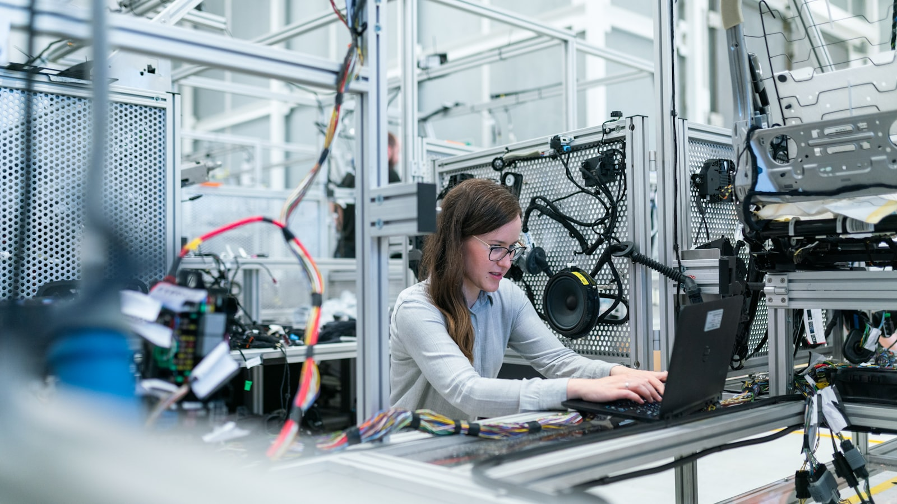
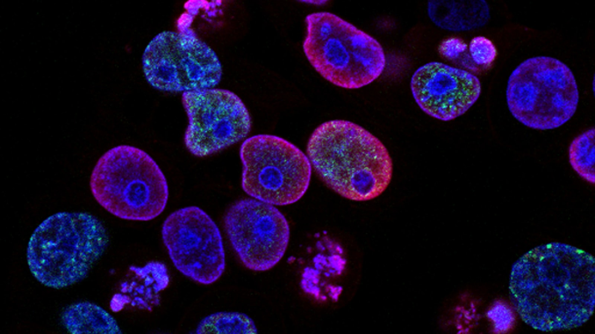
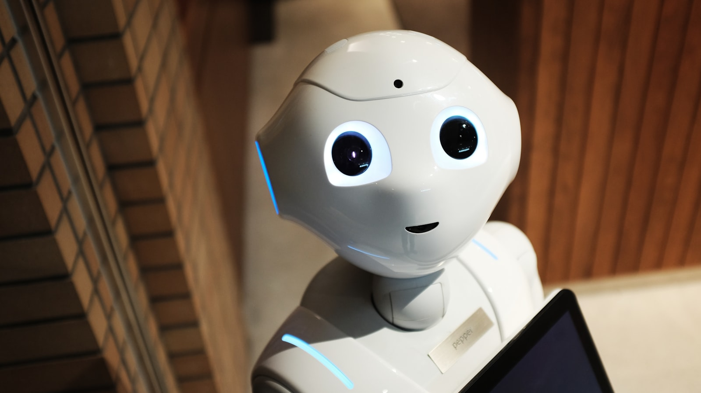
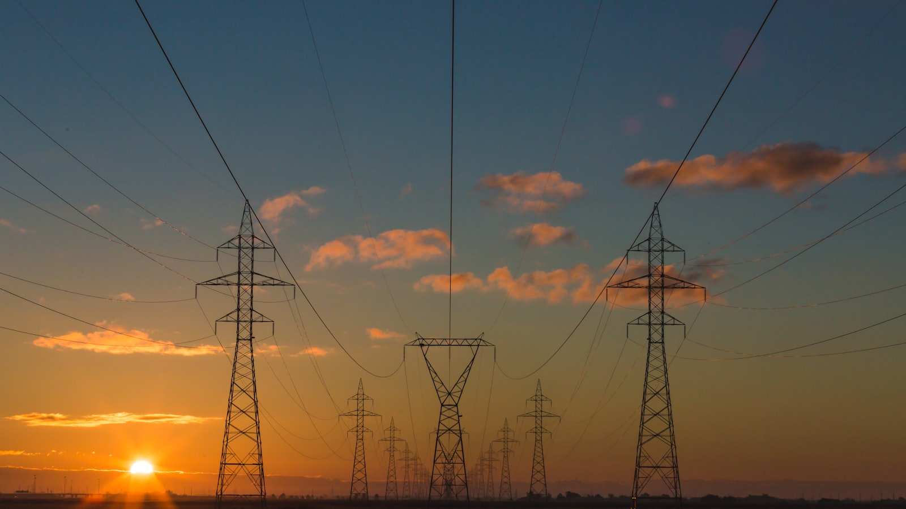

IPO · 코스닥
MakinaRocks, 5월 20일 코스닥 상장
공모가 15,000원, 264만 신주, 조달액 약 395억 원.
코스닥 신규 상장과 공모, 기술 특례 상장, 분사 IPO. 한국에서 가장 빠르게 가격이 형성되는 시장이다.

공모가 15,000원, 264만 신주, 조달액 약 395억 원.

Kanaph Therapeutics 962:1, IM Biologics 839:1.

K-콘텐츠의 글로벌 위상이 분사 IPO에 어떻게 가격을 매겨줄지.

점유율은 늘었지만 흑자 전환은 미뤄졌다.

9,000억 원 ESG 채권 발행 후 IPO 일정을 2027 1분기로 연기.